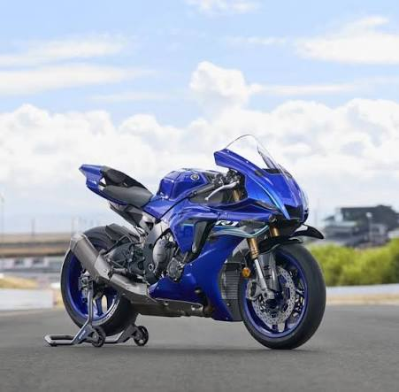
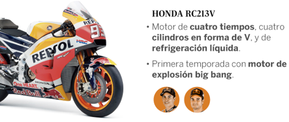
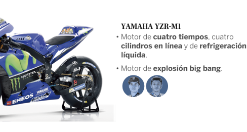
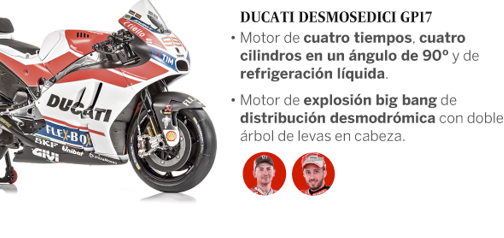
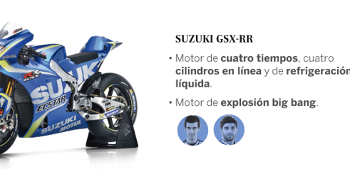

Vive la adrenalina de las superbikes más potentes del mundo. Diseño, velocidad y tecnología se unen en una experiencia única.
Motores de alto rendimiento diseñados para velocidad extrema.
Tecnología derivada de MotoGP y campeonatos mundiales.
Sistemas electrónicos avanzados para control total.

La Yamaha YZF-R1 es una de las motocicletas súper deportivas más icónicas e influyentes de la historia, lanzada originalmente en 1998 para revolucionar el segmento de las superbikes mediante una combinación radical de ligereza, tamaño compacto y potencia extrema. Diseñada bajo el liderazgo del ingeniero Kunihiko Miwa, esta moto transformó las reglas del diseño al reubicar los ejes del motor, marcando un antes y un después en la industria

La Kawasaki Ninja ZX-10R es una de las motocicletas súper deportivas más laureadas en el ámbito competitivo moderno, lanzada en 2004 como la sucesora espiritual de la mítica ZX-9R. A diferencia de sus competidoras que buscaban un equilibrio para la calle, la ZX-10R nació bajo la filosofía de rendimiento radical en circuito, convirtiéndose con los años en la reina indiscutible del Campeonato Mundial de Superbikes (WorldSBK) de la mano del piloto Jonathan Rea Motorsport.com.

La Honda CBR900RR Fireblade, lanzada en 1992, es la motocicleta que inventó el concepto moderno de superbike. Ideada por el legendario ingeniero de Honda, Tadao Baba, la Fireblade rompió con la tendencia de la época (motos de gran cilindrada pero excesivamente pesadas) bajo un lema absoluto: "Control Total". Su filosofía demostró que la ligereza y la agilidad eran más importantes para la velocidad que la potencia bruta en línea recta.

La Ducati Panigale V4, lanzada al mercado en 2018, representa el cambio conceptual más radical en la historia moderna de la marca italiana Ducati. Por primera vez en décadas, Ducati abandonó su icónica configuración de motor bicilíndrico en L para sus motocicletas súper deportivas de calle, adoptando un motor de cuatro cilindros en V (V4) derivado directamente de su prototipo Desmosedici de MotoGP.




| Moto | CC | HP | Velocidad |
|---|---|---|---|
| Yamaha R1 | 998 | 200 | 299 km/h |
| Kawasaki ZX-10R | 998 | 203 | 305 km/h |
| Honda Fireblade | 1000 | 214 | 310 km/h |
| Ducati Panigale V4 | 1103 | 215 | 320 km/h |